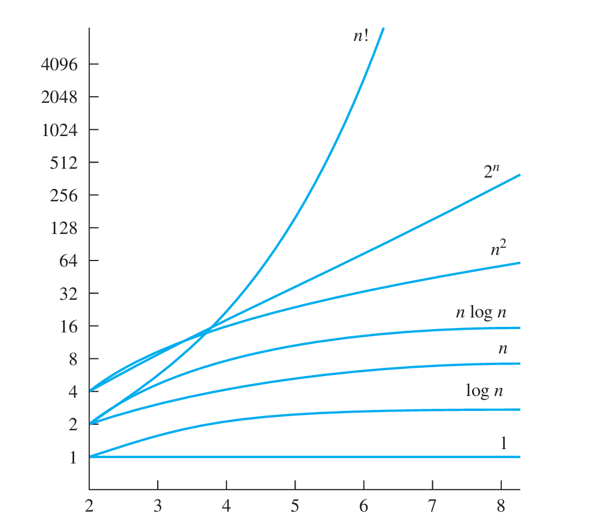

3.2 函数的增长
大\(O\)记号
定义1\(\qquad\)如果\(f\)和\(g\)是从整数集或实数集到实数集的函数,存在常数\(C\)和\(k\),当\(x>k\)时有
那么\(f(x)\)是\(O(g(x))\)的,也可记为\(f(x)=O(g(x))\).
如何利用大\(O\)记号的定义
首先,选择一个特定的\(k\)值,估算\(x>k\)时\(f(x)\)的值,再利用估算的值寻找\(C\)
如果\(f(x)\)是\(O(g(x))\)且\(g(x)\)是\(O(f(x))\),那么\(f(x)\)和\(g(x)\)是同阶的.
可以将\(g(x)\)替换为更大的绝对值函数,也就是说,如果
并且对于所有的\(x>k\),有\(\lvert g(x)\rvert\le\lvert h(x)\rvert\),那么
即\(f(x)\)是\(O(g(x))\)的.
一些函数的大\(O\)估算
定理1\(\qquad\)令\(f(x)=a_nx^n+a_{n-1}x^{n-1}+\cdots+a_1x+a_0\),其中\(a_n,a_{n-1},\cdots,a_1,a_0\)是实数,那么\(f(x)\)是\(O(x^n)\)的.
证明
利用三角不等式
当\(x>1\)时,有
其中\(C=a_n+a_{n-1}+\cdots+a_1+a_0\). \(n!\)是\(O(n^n)\)的,\(\log n!\)是\(O(n\log n)\)的
常用的估计时间复杂度的函数有

组合函数的增长
定理2\(\qquad\)如果\(f_1(x)\)是\(O(g_1(x))\),\(f_2(x)\)是\(O(g_2(x))\),那么\((f_1+f_2)(x)\)是\(O(g(x))\)的,其中\(g(x)=\max(\lvert g_1(x)\rvert, \lvert g_2(x)\rvert)\).
证明
因为\(f_1(x)\)是\(O(g_1(x))\),\(f_2(x)\)是\(O(g_2(x))\), 所以\(f_1(x)\le C_1g_1(x),f_2(x)\le C_2g_2(x)\)
其中\(C=C_1+C_2\),\(g(x)=\max(g_1(x)+g_2(x))\).
推论1\(\qquad\)如果\(f_1(x)\)和\(f_2(x)\)都是\(O(g(x))\),那么\((f_1+f_2)(x)\)也是\(O(g(x))\)的.
定理3\(\qquad\)如果\(f_1(x)\)是\(O(g_1(x))\),\(f_2(x)\)是\(O(g_2(x))\),那么\((f_1f_2)(x)\)是\(O(g_1(x)g_2(x))\)的.
证明方法与定理2类似
给出\(f(x)=(x+1)\log(x^2+1)+3x^2\)的大\(O\)估算
首先,\(x+1\)是\(O(x)\)的.\(3x^2\)是\(O(x^2)\)的 然后,当\(x>1\)时,\(x^2+1<2x^2\),因此当\(x>2\)时,有
根据定理3,\((x+1)\log(x^2+1)\)是\(O(x\log x)\). 根据定理2,\(f(x)\)是\(O(\max(x\log x, x^2))\). 又因为当\(x>1\)时,\(x^2>x\log x\) 所以\(f(x)\)是\(O(x^2)\)的.
大\(\varOmega\)和大\(\varTheta\)记号
大\(O\)给出了函数增长的上界,但他无法指明函数的下界,因此使用大\(\varOmega\)来表示函数增长的下界,使用大\(\varTheta\)指明上界和下界.
定义2\(\qquad\)如果\(f\)和\(g\)是从整数集或实数集到实数集的函数,存在常数\(C\)和\(k\),当\(x>k\)时有
那么\(f(x)\)是\(\varOmega(g(x))\)的.
\(f(x)\)是\(\varOmega(g(x))\)的当且仅当\(g(x)\)是\(O(f(x))\)的.
定义3\(\qquad\)如果\(f\)和\(g\)是从整数集或实数集到实数集的函数,且\(f(x)\)是\(O(g(x))\)的,同时\(f(x)\)是\(\varOmega(g(x))\)的,那么\(f(x)\)是\(\varTheta(g(x))\)的.
若\(f(x)\)是\(\varTheta(g(x))\),则\(f(x)\)是\(g(x)\)阶的,或者说\(f(x)\)和\(g(x)\)是同阶的
判断\(\varTheta\)的其他几种方法
- \(f(x)\)是\(O(g(x))\)的 ,同时\(g(x)\)是\(O(f(x))\)的
- 存在实数\(C_1\),\(C_2\)和\(k\),当\(x>k\)时,有 $$ C_1\lvert g(x)\rvert\le f(x)\le C_2\lvert g(x)\rvert $$
定理4\(\qquad\)令\(f(x)=a_nx^n+a_{n-1}x^{n-1}+\cdots+a_1x+a_0\),其中\(a_n,a_{n-1},\cdots,a_1,a_0\)是实数且\(a_n\ne0\),那么\(f(x)\)是\(x^n\)阶的.
补充
- 小\(o\)记号 当
时,\(f(x)\)是\(o(g(x))\)的.
- 渐近 如果
那么\(f(x)\)和\(g(x)\)是渐进.记作\(f(x)\sim g(x)\).